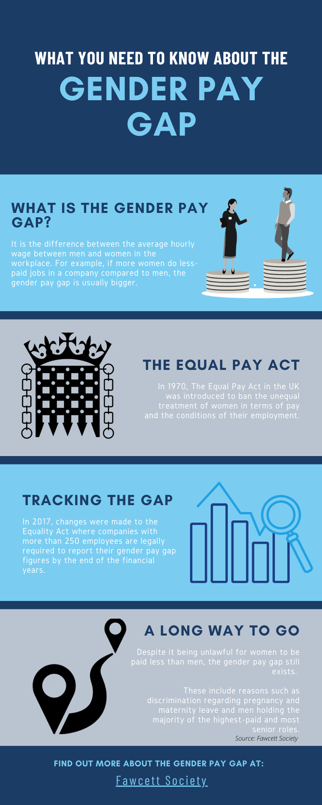

Sophie Walker, Chief Executive of Young Women’s Trust, is extremely concerned that the government have decided to suspend the gender pay gap reporting after fighting hard to see it introduced in 2017:
“This act signalled something which has become a recurring theme of this pandemic - that women’s equality is simply not a priority for this government.
“Companies already didn’t take pay gap reporting seriously enough and now it’s going to be hard to get the momentum going again, at precisely the time women’s jobs and pay are collapsing at a disproportionate rate to men.”
In normal circumstances, if employers don’t submit their gender pay gap data, the EHRC (Equality and Human Rights Commission) have the authority to investigate.
This can lead to companies facing the maximum penalty in Crown Court of an unlimited fine after court action.
Data from 2018/19 shows that 1 in 20 companies submitted their data late, with one company submitting their figures 16 months after the deadline.
Using data releases from the Government for their own research, Walker said: “Pay gap reporting needs to be understood as a tool to start to expose the multitude of problems faced by women in the workplace.”
However, she says that these issues have worsened during the Coronavirus pandemic.
The Trades Union Congress (TUC) report that some unions have seen employers have been furloughing pregnant women or sending them home on Statutory Sick Pay (SSP), which breaches women’s rights under health and safety law.
One of the issues that were raised to the union included employers attempting to pay pregnant women 80% of their average earnings of SSP when entitled to 100% of their normal pay if they cannot work.
Walker says that Young Women’s Trust is urgently calling on the government to confirm that the gender pay gap reporting will return by April 2021 with additions:
“We also want them to go a step further. The government must also make employers immediately publish their redundancy and job loss data by sex, ethnicity and disability so we can see the true impact on women and minorities, especially as the furlough scheme ends.”